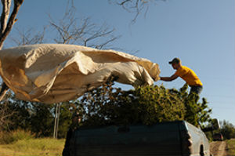

In August, industrial hemp products were allowed for the first time to be produced and sold, although no one can grow hemp until the state Department of Agriculture releases final regulations.
On Nov. 16, MU Extension held an industrial hemp workshop in St. Charles County to give potential growers an overview of the industry. The session covered grain and fiber hemp, producer perspectives, budgets, processing and the industry outlook.

Furrow-irrigated rice gaining popularity in Southeast Missouri
Jesse Baalman
Rice has historically been grown in level fields surrounded by levees that are flooded with 5-8 inches of water. The seedlings are typically soaked and then dropped into the fields where they mature after four or five months.
Missouri is one of the first places to adopt a furrow-irrigated growing system. This involves building raised beds within fields and appeals to farmers who need to conserve their labor costs.